May 2020 (version 1.46)
Update 1.46.1: The update addresses these issues.
Downloads: Windows: User System Arm64 | Mac: Intel | Linux: deb rpm tarball snap
Welcome to the May 2020 release of Visual Studio Code.
- Accessibility improvements - Status bar navigation, easier keyboard text selection.
- Flexible view and panel layout - Move and group views in the Side Bar and Panel.
- Pinned editor tabs - Pin editors in the title bar to keep frequently used files handy.
- Add GitHub remotes - Add GitHub remotes to your local repository.
- Automatic debugger configuration - Save and modify generated debug configurations.
- JavaScript CommonJS auto imports - Auto imports will now use
requirefor CommonJS modules. - JS/TS refactorings preserve newlines - Formatting is preserved during refactoring operations.
- Settings Sync preview - New Synced Machines and Data views to manage your preferences.
- GitHub Issue Notebooks - Run GitHub issue queries and display results in a custom Notebook.
- Windows ARM64 support - New VS Code Insiders ARM64 builds are available.
- VS Code at Build 2020 - Talks on Tips&Tricks, Remote Development, and The History of VS Code.
If you'd like to read these release notes online, go to Updates on code.visualstudio.com.
Accessibility
This milestone we again received helpful feedback from our community, which let us identify and tackle many accessibility issues.
- The Status bar now supports keyboard navigation. When focus is in the Status bar via Focus Next Part (F6), arrow navigation moves between Status bar entries.
- To make it easier to start and end selection using the keyboard, there are four new commands:
- Set Selection Anchor (⌘K ⌘B (Windows, Linux Ctrl+K Ctrl+B))
- Select From Anchor to Cursor (⌘K ⌘K (Windows, Linux Ctrl+K Ctrl+K))
- Cancel Selection Anchor (Escape)
- Go to Selection Anchor
- Activity bar entries now have a
tabrole and set the appropriatearia-expandedstate. - Aria labels of editors now properly convey the following editor states:
pinned,preview, andreadonly.
Workbench
Flexible layout
For several iterations, we have announced progress on making our layout more flexible. With this release, that set of features are now ready for general use. Below is an overview of these features.
Moving views between Side Bar and Panel
Perhaps you would prefer a view from the Side Bar to be located in the Panel or vice versa. To do this, you can now drag a view by its header or an entire group by its icon or title from its current placement and move it to the desired location. From the keyboard, the commands View: Move View (workbench.action.moveView) and View: Move Focused View (workbench.action.moveFocusedView) can be used.
Below is a demonstration of dragging Search to the Panel and Problems into the Side Bar.
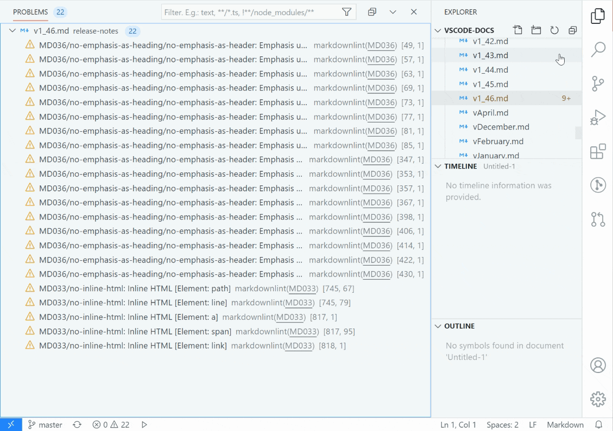
Dragging Search to the Panel and Problems into the Activity Bar
Theme: GitHub Light
Earlier there was a setting for moving the Search view from the Side Bar to the Panel and now that setting is obsolete since drag and drop can be used instead.
Grouping views
You might also want to group some views together that come from different extensions or you feel the default groups of built-in views aren't quite right for you. You can both move views into existing groups or create new groups for a select set of views. This works across the Side Bar and Panel just as before. Below are a couple of examples of this.
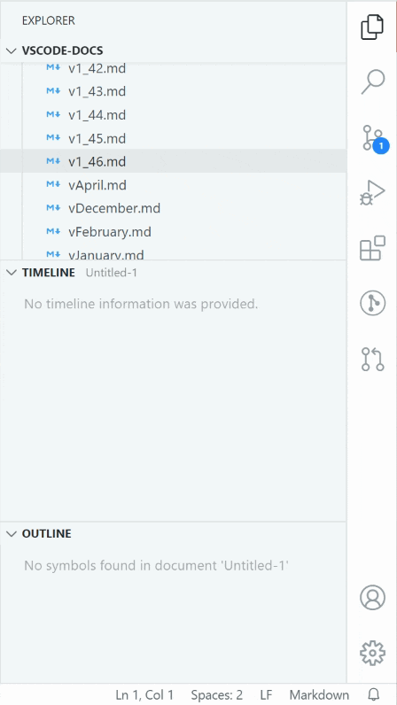
Dragging the Timeline view from Explorer to Source Control
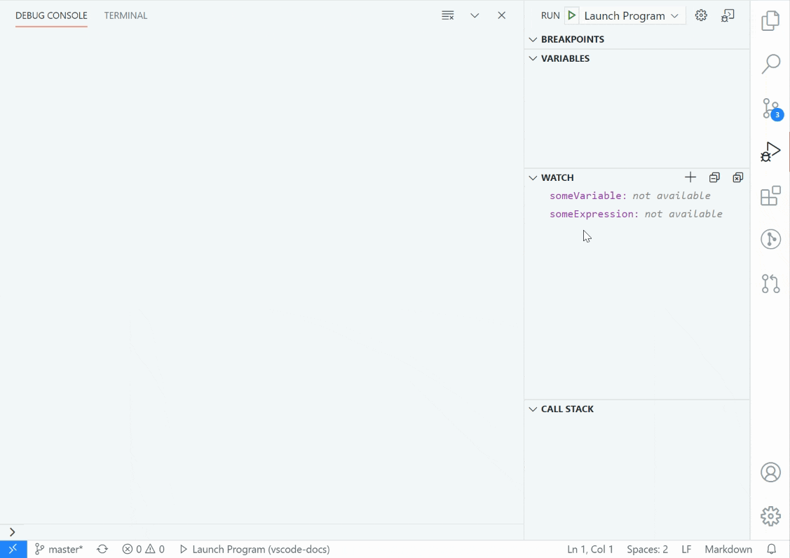
Dragging the Watch view from the Run Side Bar to be next to the Debug Console in Panel
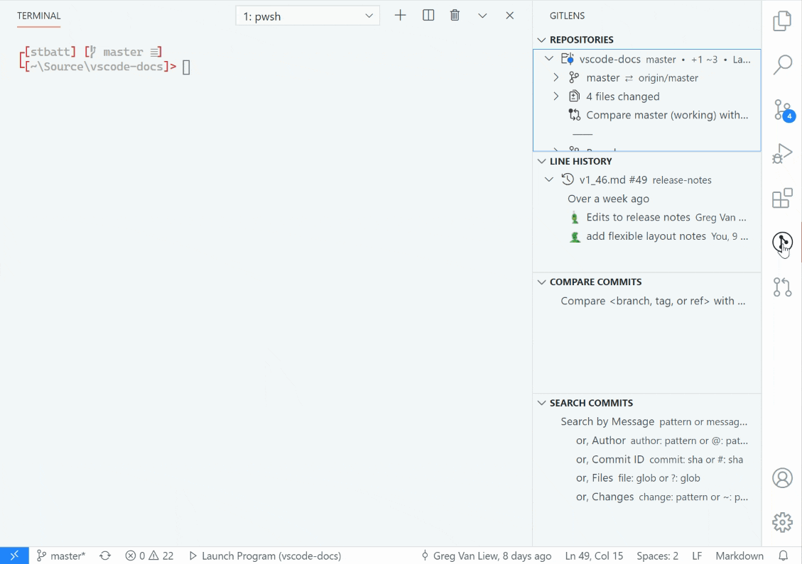
Creating a custom history group in the Side Bar and Panel with Timeline and GitLens
Theme: GitHub Light
Resetting view Locations
Views and groups of views can be reset to their default locations via their context menus. When a view has been moved from its default location, there will be an entry Reset Location to move it back to its home. There are also commands View: Reset Focused View Location (workbench.action.resetFocusedViewLocation) and View: Reset View Locations (workbench.action.resetViewLocations) for resetting all views and groups back to their default locations.
For extension authors contributing views or view containers
When views are moved around the workbench, they sometimes need to be presented differently, either with an icon or extra context if they aren't in their default location. When contributing a view, authors may now provide an icon property and a contextualTitle. If not provided, these will default to the icon and title of the view container to which they are contributed.
Lastly, extension authors can now start contributing view containers directly to the panel as opposed to activitybar as outlined in the Tree view extension guide.
Pin tabs
You can now pin tabs either from the context menu or using the new command workbench.action.pinEditor (⌘K ⇧Enter (Windows, Linux Ctrl+K Shift+Enter)).
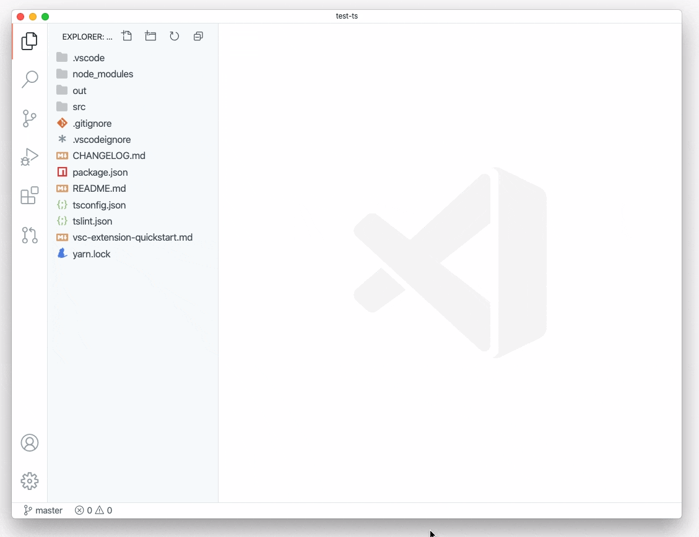
Theme: GitHub Light
Pinned tabs have a number of useful features to help mark files that are important to you:
- Pinned tabs always appear first before non-pinned tabs.
- They do not scroll out of view if you have many tabs opened.
- They do not close when using commands such as Close Others.
- They do not close even if you exceed a set limit on the number of opened editors.
You can also drag and drop tabs in and out to change the pinned state.
Pinned tabs visually shrink to the size of an icon (or will show the first letter of the filename if icons are disabled) to save space. If you want to see the dirty indicator with pinned tabs, you can set workbench.editor.highlightModifiedTabs: true.
Note: We are still thinking about other ways to present pinned tabs. If you have an opinion, feel free to share your ideas in the existing issues for showing a secondary tab bar or having a setting to show more context for pinned tabs.
Search Editor
There are several new options for configuring how Search Editors are created:
search.searchEditor.defaultNumberOfContextLines- Configure how many context lines a Search Editor shows by default.search.searchEditor.reusePriorSearchConfiguration- Reuse the last active Search Editor's configuration when creating a new Search Editor.- Support for passing Search Editor configuration variables in keybinding arguments (parameter details).
Explorer auto reveal focus without forcing a scroll
There is a new option focusNoScroll for the explorer.autoReveal setting. When using this option, the Explorer will automatically select files when opening them but will not scroll to reveal them in the Explorer view.
Smooth scrolling for lists and trees
Enabling the workbench.list.smoothScrolling setting will make scrolling in lists and trees much smoother with hardware that lacks smooth scrolling (for example, discrete mouse wheel on Windows).
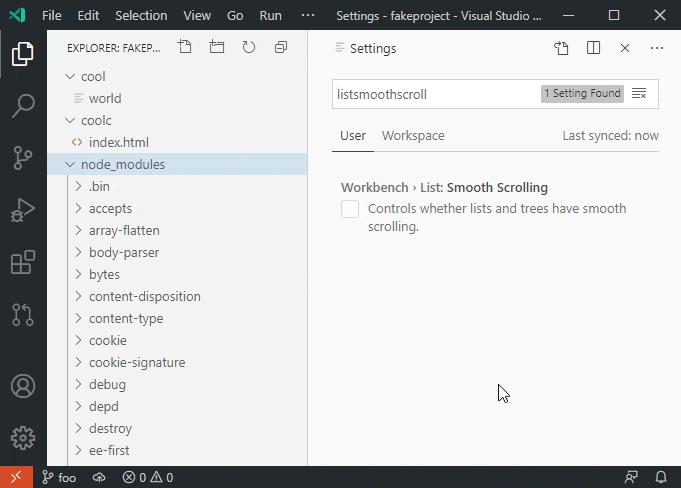
Sash size configuration
You can now use the workbench.sash.size setting to configure the feedback area size in pixels of the dragging area in between views/editors. Set it to a larger value if you feel it's hard to resize views using the mouse.
Screencast mode font size
The new screencastMode.fontSize setting lets you configure the font size in pixels that is being used in screencast mode.
Trusted link protection
VS Code will now allow directly opening URL links to any GitHub remotes in your workspace. Additionally, if you have signed in with GitHub, all links to pages under your GitHub profile will be trusted.
Editor
Cross file Undo for closed files
It is now possible to Undo across files, even if the files have been closed in the meantime. The edited files will be reopened and a cross-file operation, such as a rename symbol, will be undone in all affected files.
Unusual line terminators
VS Code currently recognizes CR (Carriage Return), LF (Line Feed), and CRLF as line terminators. Some programming languages have different definitions for what constitutes a line terminator. This varies across languages, for example LS (Line Separator) and PS (Paragraph Separator) are line terminators in C# and JavaScript, but not in HTML, PHP, or Java. These line ending differences can cause problems when VS Code communicates with a language server, since various concepts are communicated between VS Code and the language server using (line;char) coordinates. If there are different definitions of a line terminator, it can result in different mappings of lines and locations in the file.
When opening a file, VS Code will now check if LS or PS are present in the opened file, and will prompt and ask for permission to remove these characters. These unusual line terminators are rare in practice and are most likely inserted in source code by accident, via copy-pasting.
Integrated Terminal
Improved link support
The Integrated Terminal link preview from last month has replaced the old implementation. The new links implementation now enables:
- Improved web and
file://link detection, by using the editor's link detection. - Folder link support, either opening the folder in the Explorer or opening a new VS Code window.
- Different link actions for different link types, falling back to "word" links that search the workspace (based on the
terminal.integrated.wordSeparatorssetting). - Similar link highlighting and hover experience to the editor.

Theme: Topaz (Dim)
Tasks
Continuing with the recent tasks performance improvements, Run Build Task will no longer always ask extensions for their tasks. If you have a default build task configured in your folder's tasks.json, Run Build Task will only try to resolve that task, instead of finding all tasks from all extensions before running the default build task.
Source Control
Open in Terminal
You can now open a repository in a terminal from the context menu in the Source Control view.
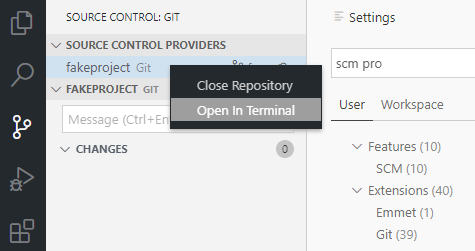
Add remote from GitHub
You can now add a GitHub repository as a remote to your local repositories using the Git: Add Remote... command.
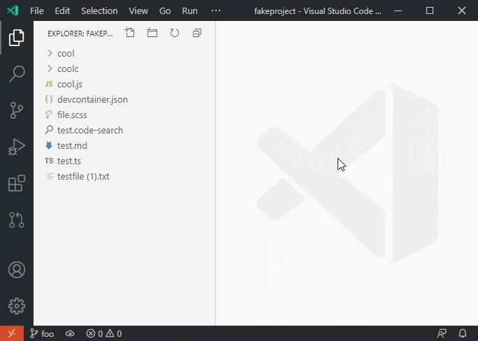
Generate .gitignore when publishing to GitHub
It's now possible to generate a .gitignore file when publishing a workspace to GitHub. When publishing a workspace to GitHub, you are prompted to select which files to include in the repository and those files not included will be added to a .gitignore file.
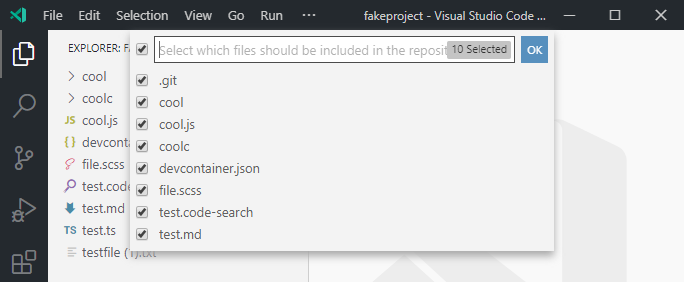
Input field font family
You can now customize the font family used in the Source Control input field using the Scm: Input Font Family setting. The setting supports the following values:
default- Workbench user interface font family.editor- Font family specified in the Editor: Font Family setting.font family name- The name of the font family to be used in the input field (for example,Cascadia Code).
Abort in progress rebase
You can now abort in progress rebase operations using the Git: Abort Rebase command.
Debugging
Automatic debug configurations improvements
This milestone we have improved the experience for automatic debug configurations:
-
Last milestone, we introduced a feature so that extension authors can analyze the current project and offer debug configurations automatically. These debug configurations are dynamically created and so they do not show up in the
launch.jsonconfiguration file. This is nice as long as they work out of the box, but sometimes you may need to modify the configuration, for instance to add an additional argument. There is now an option to save an automatic debug configuration into alaunch.json, in order to open it up for editing. To do this, use the gear button at the end of the automatic debug configuration in the Debug: Select and Start Debugging Quick Pick: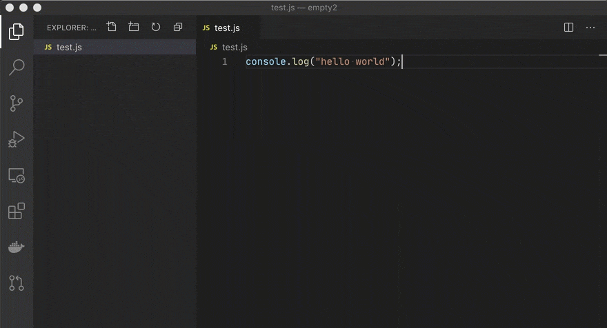
-
It is now possible to show all automatic debug configurations from the Run and Debug start view.
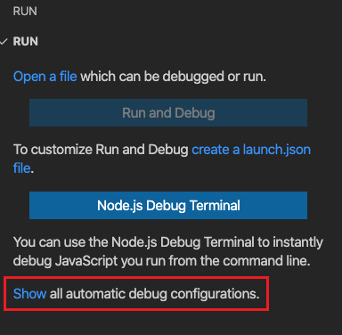
-
The Debug dropdown now remembers the previously chosen automatic debug configuration.
Step Into Targets
Debugging into a statement with many nested function calls can be painful because you might have to step through functions you are not really interested in. To improve this scenario, the Debug Adapter Protocol has supported the "Step Into Target" feature that displays UI for directly stepping into the function you are interested in.
In this milestone, VS Code has started to use this feature. When debugging has stopped on a statement, the context menu shows a new action Step Into Targets. This action presents a list of all targets (typically functions) that are available at the current stack frame. Selecting one of them will step into that target.
Note that every stack frame can have its own set of targets. So the result of the Step Into Targets actions depends on the currently selected frame in the CALL STACK view.
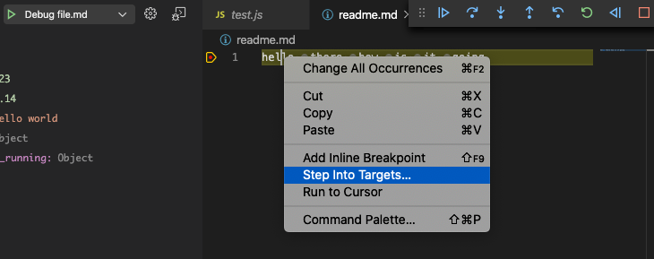
For now, only the Mock Debug extension has (fake) Step Into Target support, but soon other debug extensions will follow - such as the Julia debugger.
Languages
TypeScript 3.9
VS Code now includes TypeScript 3.9.4. This major TS update brings some new tooling features, performance improvements, and a number of bug fixes. You can read more about TS 3.9 on the TypeScript blog.
CommonJS auto imports
If VS Code detects that you are working in a CommonJS style JavaScript module, auto imports will now use require instead of import.
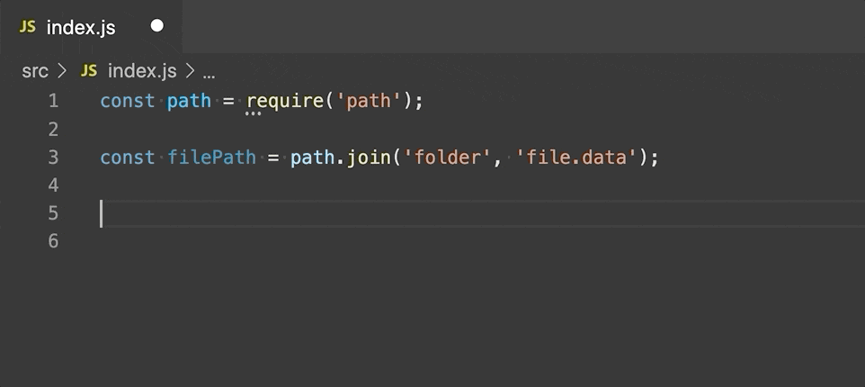
Refactorings preserve newlines
Refactorings for JavaScript and TypeScript, such as Extract to method and Move to new file, now try to preserve the original formatting of the refactored source code. This includes any newlines present in the selection:
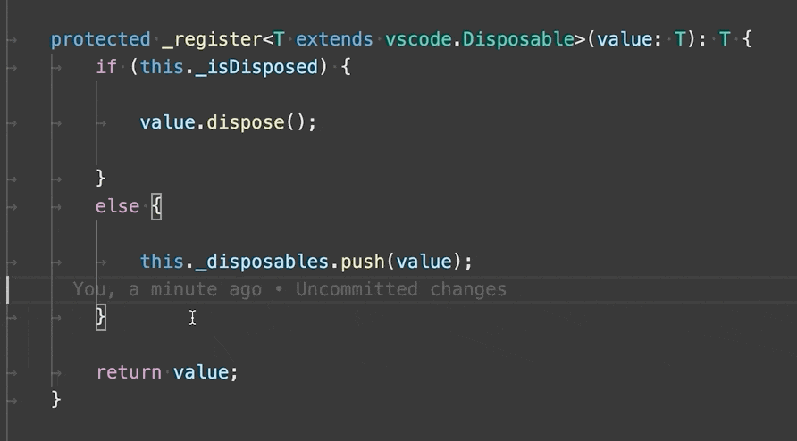
Add all missing imports source action
VS Code has long supported a Quick Fix that adds all missing imports in a JavaScript or TypeScript file. This iteration, we introduced a new Add all missing imports source action that lets you trigger this from anywhere in a file.
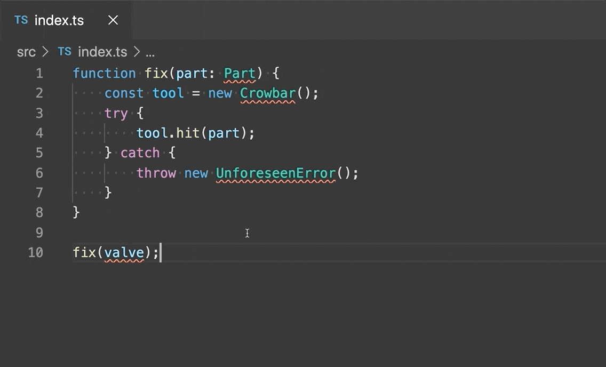
This also allows you to set up a keybinding for Add all missing imports:
{
"key": "ctrl+shift+i",
"command": "editor.action.sourceAction",
"args": {
"kind": "source.addMissingImports",
"apply": "first"
}
}
Or even enable Add all missing imports on save:
"editor.codeActionsOnSave": [
"source.addMissingImports"
]
JS/TS Go to Symbol in workspace includes all opened projects
By default, workspace symbol search for JavaScript and TypeScript now searches all opened jsconfig and tsconfig projects. It previously only included search results from the project the focused file belonged to.
This behavior is controlled by the typescript.workspaceSymbols.scope setting and requires TS 3.9+. To revert to the previous behavior and only search the current project, set "typescript.workspaceSymbols.scope": "currentProject"
Add missing import Quick Fixes can now be marked preferred
The Adding missing import Quick Fix for JavaScript and TypeScript can now be marked as the preferred fix for an error. This lets you add the missing import with a single keypress using ⌥⌘. (Windows, Linux Shift+Alt+.).
Note that Adding missing import will only be marked as the preferred fix if there is a single valid import. If there are multiple potential imports in your projects, you still need to use the normal Code Actions menu to select which import to use. Also, to enable Add missing import Quick Fixes in JavaScript, you must enable type checking.
JSON offline mode
A new setting json.schemaDownload.enable lets you control whether the JSON extension is allowed to fetch JSON schemas from http and https.
A warning triangle in the Status bar will appear when the current editor would like to use schemas that cannot be downloaded. Schema-based features like validation, code completion, and hovers will then be limited.
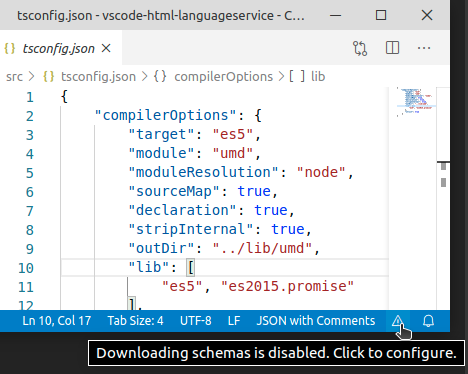
Browser support
Debugging stopped indicator in tab title
When debugging an extension in the browser, the debugged extension shows up in a new browser tab that deactivates (hides) the debugger tab. When the debuggee stops for some reason, for example, hits a breakpoint, we are not able to activate the debugger tab (because browsers don't provide an API for this). This makes it almost impossible to discover that the debugged extension has stopped.
To alleviate this problem, we now update the tab title to include a red circle indicator 🔴 (resembling a breakpoint). As soon as the debugger tab is activated, the red dot is removed.
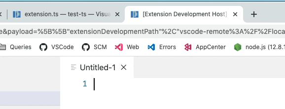
Running VS Code from the Integrated Terminal
When you open an Integrated Terminal in VS Code running in the browser, you can type code to get access to several useful commands that all work in the browser.
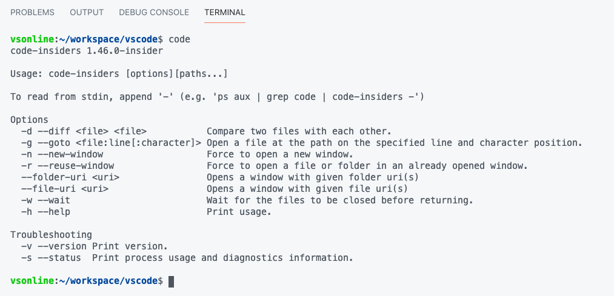
In this iteration, we expanded support for many options:
--gototo open a file on a specific line--diffto compare two files--waitto let a program wait for files closing--addto add a folder to the current workspace
In GitHub Codespaces, for example, this enables you to use the browser-based VS Code as an editor for Git:
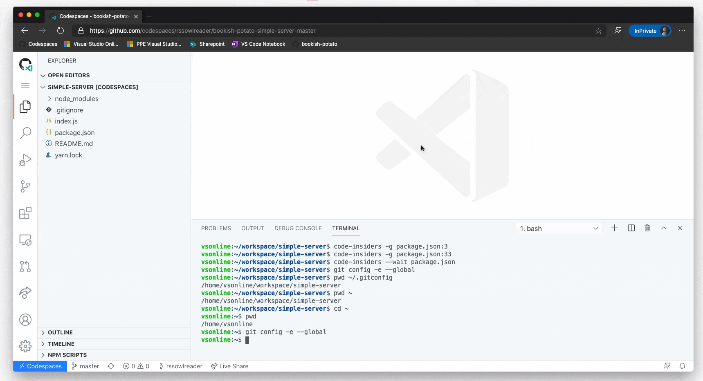
Theme: GitHub Light
File/folder upload
VS Code lets you drop files into the File Explorer to upload them. In this iteration, we improved this feature to allow you to drop folders to upload them, including all child folders and files. Since this can be a long running operation, you will see progress reported in the Status bar and you can cancel the operation if needed.
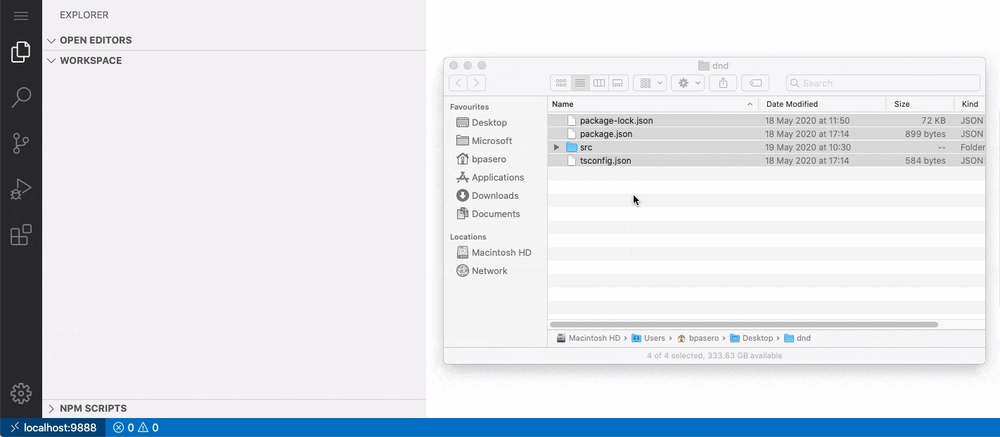
Accounts management
In previous releases, we introduced a preview of a new accounts management UI alongside the preview of the Settings Sync feature. Now, this UI will show up by default. Extensions using the new proposed Authentication Provider API can surface requests to sign in here, and you can view your accounts and manage extension access. There are currently a limited number of extensions using this API, we will work on increasing adoption once the API is stable.
Preview features
Preview features are not ready for release but are functional enough to use. We welcome your early feedback while they are under development.
Settings Sync
We have been working the last couple of months to support synchronizing VS Code preferences across machines and this feature is available for preview on the Insiders release.
In this milestone, we enhanced support for administering and diagnosing Settings Sync.
Synced Machines view
We added the Synced Machines view to show the list of machines synchronizing your VS Code preferences. A default name is provided based on the type of VS Code (Insiders or Stable) and platform you are using, but you can always update the name using the edit action available on the machine entry in the view.
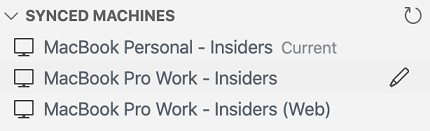
Theme: GitHub Sharp with Customizations
You can open this view using Preferences Sync: Show Synced Data command from the Command Palette.
Synced Data view
We added following enhancements to the Synced Data view.
- You can now see the machine from which data is being synced.
- You can restore to a specific state using the Restore action available on the data entry in the view.
- You can reset data on the cloud using the Reset Synced Data action available under More Action (...) button in the view header.
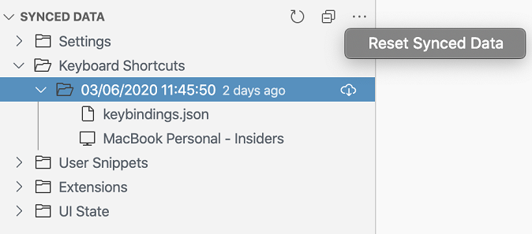
Theme: GitHub Sharp with Customizations
We now provide more assistance while turning on sync by checking if you are about to sync with data from a different machine and allow you to take appropriate action.
- Replace Local - Replace your data on the current machine with the synced data from the cloud.
- Merge - Merge your data on the current machine with the synced data from the cloud.
- Show Synced Data - Open Synced Data view to see the synced data from the cloud.
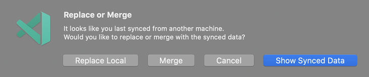
New JavaScript debugger
This month we continued making progress on our new JavaScript debugger. Since mid-May, it has become the default debugger on Insiders, and is included (but not enabled by default) on VS Code Stable in this release. You can start using it with your existing launch configurations by enabling the debug.javascript.usePreview setting.
Progress this month was primarily focused on polishing and stabilizing existing functionality:
- Multi-tab support for browser debugging: You can now attach to multiple tabs when running browsers or webviews. By default, js-debug attaches to all tabs that match the
urlFilter. When attaching to browsers, you can set"targetSelection": "pick"in your launch configuration to connect to a single tab as in the previous debugger. - Improved tab disambiguation: The debug session names more accurately disambiguate multiple tabs. Additionally, we added a Focus Tab action in the context menu for the debug session in the Call Stack view, which you can use to make sure you're looking at the right page.
- Option to auto-expand getters: Matching the behavior of Chrome, property getters are not evaluated by default when shown in the Variables view or the Debug Console. You can now configure this behavior by setting the
debug.javascript.autoExpandGettersoption. - Performance improvements for types of webpack bundles: Certain types of webpack bundles, those built with
evalsourcemaps, ran slowly under js-debug. They no longer do so.
TS 4.0 nightly build support
VS Code 1.46 includes preview support for TypeScript 4.0 nightly builds. The nightly build includes support for some new tooling features that we are actively working on, such as more flexible selections for refactoring.
You can try TypeScript 4.0 nightly builds today by installing the TypeScript Nightly extension. Please share feedback and let us know if you run into any bugs with the TypeScript 4.0.
Contributions to extensions
Notebooks
Quick outline
Notebook extensions, such as GitHub Issue Notebooks, now support quick outline. Press kb('workbench.action.gotoSymbol'), or use the Go to Symbol in Editor command, and see a preview of all Markdown and code cells of the current notebook.
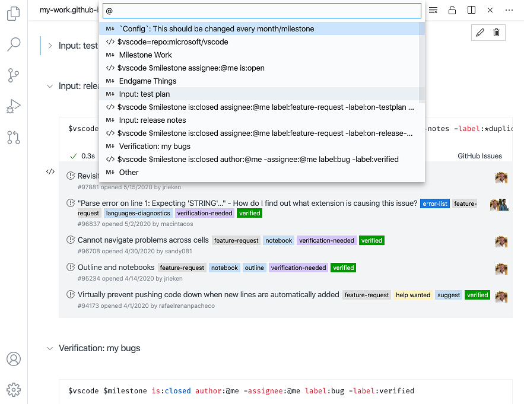
Theme: GitHub Theme
Error and symbol navigation
We have improved how F8 and Find All References work. All code navigation gestures should feel as natural as they to do outside of Notebooks. For instance, the Problems view will now show all errors of all cells grouped by the Notebook, not by cell anymore:
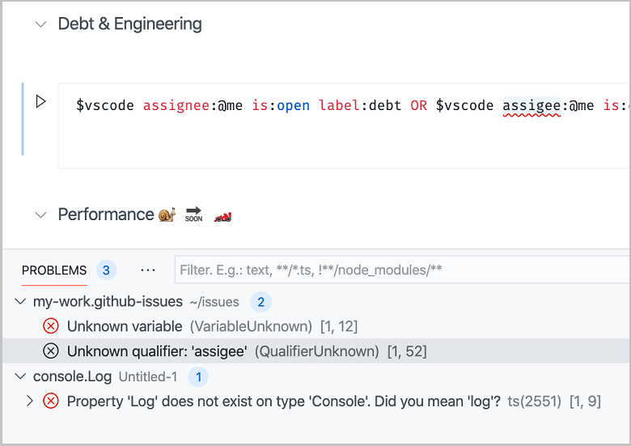
Theme: GitHub Theme
Join/Split cells
We introduced two sets of commands for you to quickly join cells or split cells into smaller fragments:
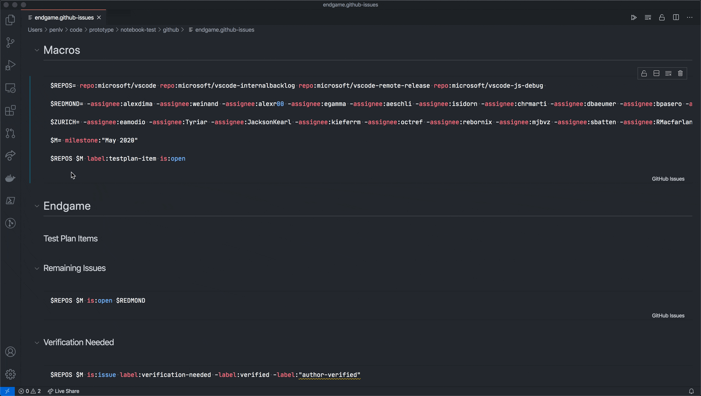
Theme: GitHub Dark Theme
Retained Notebook
Pinned or dirty Notebook editors are now persistent in the workspace, so users won't lose the working state in the Notebook if the Notebook is moved to the background or moved to another editor group.
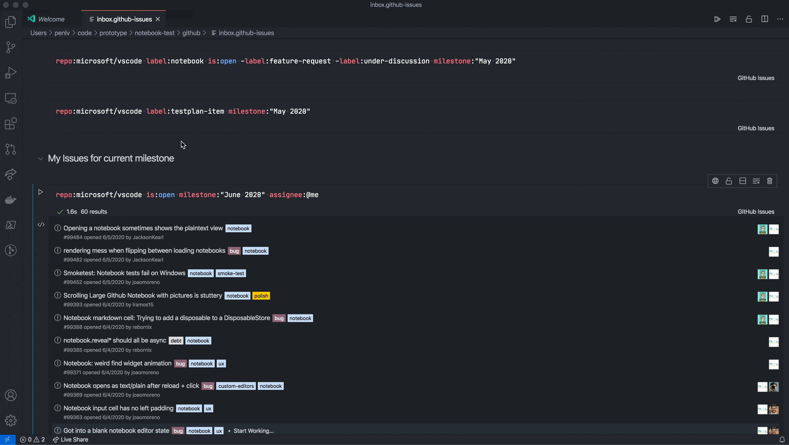
Theme: GitHub Dark Theme
Unified Undo/Redo stack
Users operations of manipulating Notebook cells or modifying Notebook cell content are now tracked in the same Undo/Redo stack.

Theme: GitHub Dark Theme
GitHub Pull Requests and Issues
Work continues on the GitHub Pull Requests and Issues extension, which allows you to work on, create, and manage pull requests and issues. Some updates for this release include:
- Improved labels in issue hovers.
- Issue and user suggestions now only trigger in comments and plaintext.
- The new issue editor enables you to set assignees and labels.
To learn about all the new features and updates, you can see the full changelog for the 0.17.0 release of the extension.
Remote Development
Work continues on the Remote Development extensions, which allow you to use a container, remote machine, or the Windows Subsystem for Linux (WSL) as a full-featured development environment.
New features in 1.46 include:
- Dev Containers: Support for GPG forwarding.
- Dev Containers: Support for inspecting a Docker volume.
- Dev Containers: New
devcontainer.jsoncommand properties.
You can learn about new extension features and bug fixes in the Remote Development release notes.
Hex Editor
With the custom editor API finalized with support for binary editors, we have developed a hex editor extension to provide a native hex editing experience.
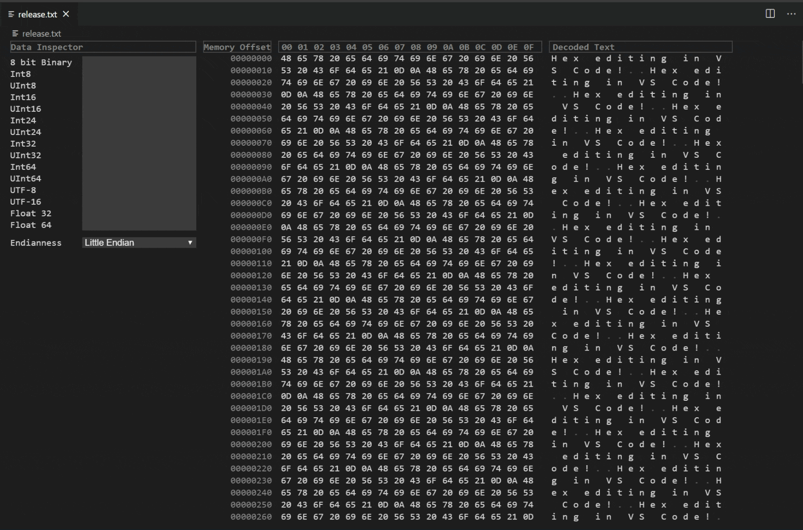
This extension is still under development and currently only supports opening and navigating files as hex. We will continue to work on the navigational experience and then move on to support editing. You can try out the extension and provide feedback or file issues against the vscode-hexeditor repository.
Extension authoring
File path casing
We have fixed a couple of bugs with how VS Code handles paths and URIs on case-insensitive file systems. Before this release, paths with different casing would not open the same document but separate, disconnected documents. That behavior often caused confusion and sometimes data loss.
However, in fixing these bugs, the behavior of the openTextDocument function has changed. The function can now return a document with a URI with different casing than the URI that was passed in. This means extensions should use TextDocument#uri as the source of truth, not the URI that they request it with.
The sample below illustrates the new behavior:
// case-insensitive file system
const uriA = vscode.Uri.file('/foo/bar.code');
const docA = await vscode.workspace.openTextDocument(uriA);
const uriB = vscode.Uri.file('/foo/BAR.code');
const docB = await vscode.workspace.openTextDocument(uriB);
assert.ok(docA === docB); // same document
assert.ok(docB.uri.toString() === uriA.toString()); // uriA is used, NOT uriB
assert.ok(docB.uri.toString() !== uriB.toString());
New Debug Console theme colors
There are new colors for styling the Debug Console view:
debugConsole.infoForeground: Foreground color for info messages in Debug ConsoledebugConsole.warningForeground: Foreground color for warning messages in Debug ConsoledebugConsole.errorForeground: Foreground color for error messages in Debug ConsoledebugConsole.sourceForeground: Foreground color for source filenames in Debug ConsoledebugConsoleInputIcon.foreground: Foreground color for Debug Console input marker icon
New input theme colors
We also have new color theme option for inputs. You can set the foreground color for active input options via inputOption.activeForeground. These appear in the Search view and Find widget (editor, terminal, debug console).
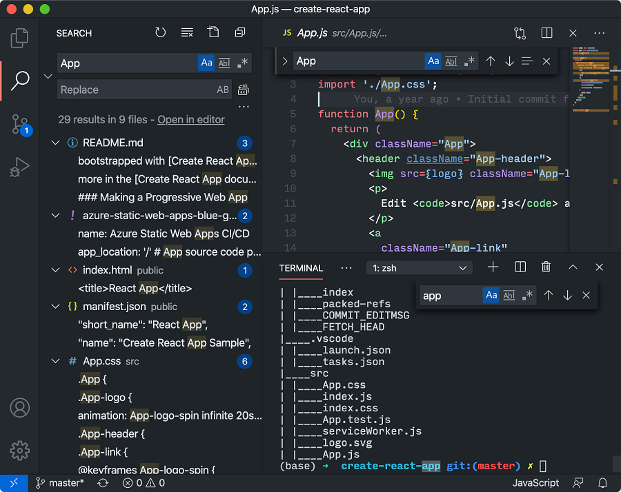
Theme: GitHub Dark Theme
New codicon icons
We've added the following new icons to our codicon library:
server-processserver-environmentrecordpassstop-circleplay-circle
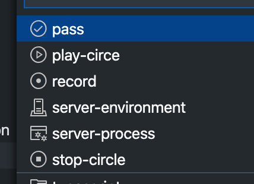
Theme: GitHub Dark Theme
Providers use generic types
Our vscode.d.ts typings now makes all two phase providers—ones that have separate 'provide' and 'resolve' methods—generic. The goal was to make it clearer that the results from the 'provide' call are passed back into the 'resolve' call.
For example, here is the new generic definition of DocumentLinkProvider:
export interface DocumentLinkProvider<T = DocumentLink> {
provideDocumentLinks(
document: TextDocument,
token: CancellationToken
): ProviderResult<T[]>;
resolveDocumentLink?(link: T, token: CancellationToken): ProviderResult<T>;
}
All providers have a default generic argument so this change should not cause any errors with your existing extension. If you were previously using casts or type checks while implementing 'resolve', consider updating your code to use a generic provider instead:
class MyDocLinkProvider implements DocumentLinkProvider<MyDocumentLink> {
provideDocumentLinks(document: TextDocument, token: CancellationToken): MyDocumentLink[] { ... }
resolveDocumentLink(link: MyDocumentLink, token: CancellationToken): MyDocumentLink { ... }
}
Writing theme-specific CSS in webviews
The body element of webviews has a new data attribute called vscode-theme-name that stores the full name of the currently active theme. This lets you write theme-specific CSS in webviews:
body[data-vscode-theme-name="One Dark Pro"] {
background: hotpink;
}
Keep in mind that given the number of themes that are available for VS Code, you should only write theme-specific CSS in exceptional cases. Normal webviews should instead use the .vscode-light and .vscode-dark class names along with the VS Code CSS variables to write CSS that adapts to whatever theme the user selects.
Custom Binary Editors
We've finalized the API for custom binary editors. The custom editor API lets extensions create custom webview-based editors that either replace VS Code's default text editor or can be switched to by users. This can be used for previewing asset files, such as images or 3D models, directly within VS Code, or for building more specialized editing interfaces for specific file types. With the new binary custom editor API, you can now build read/write editors for non-text based file formats as well.
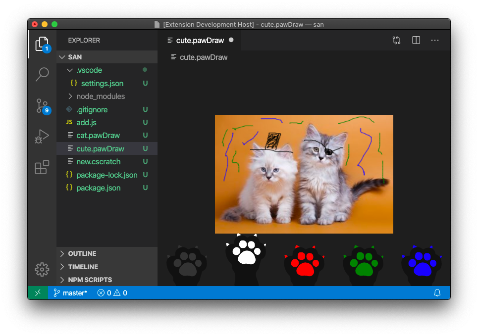
The custom editor extension guide covers the API in much more detail. Also check out the custom editor extension sample, which includes examples custom editors for both text and binary file formats.
Relaxed resolveCompletionItem
The CompletionItemProvider#resolveCompletionItem function allows providers to lazily enrich completions with more data. This "lazy" data must be optional and must not change the insert behavior of completions. Extensions can still fill in additionalTextEdits and if additional edits arrive after a completion has been inserted, the editor will still attempt to apply them. Note that this only applies to additional edits, not to the main edit (insertText) which must not change once provided.
onStartupFinished activation event
We now have a new activation event, similar to the already existing * activation event. The new onStartupFinished activation event should be used when an extension wishes to be activated sometime soon after VS Code startup, but not as part of the startup.
Environment variable collection
The ExtensionContext.EnvironmentVariableCollection API is now stable and allows extensions to contribute to terminal environments.
const collection = context.environmentVariableCollection;
const separator = process.platform === 'win32' ? ';' : ':';
collection.prepend('PATH', `/foo${separator}`);
collection.replace('JAVA_HOME', '/bar');
These collections are extension and workspace-specific and VS Code handles how conflicts between multiple extensions are dealt with. They are persisted across window reloads such that terminals created immediately after the window is loaded do not block on the extension host launching but instead use the last known version. These persisted collections are removed by disposing of the collection or when the extension is uninstalled.
When collections change, an indicator will appear on the terminal. Whether this indicator shows for any active change or just for "stale" terminals is defined by the terminal.integrated.environmentChangesIndicator setting. This API is now also used by the built-in Git extension to let VS Code be an authentication provider.
Debug Adapter Protocol
New instruction breakpoints
There is a new "instruction" breakpoint type, which makes it possible to break on an instruction at a memory address. Memory addresses are specified in symbolic form that is optionally available from evaluate, variables, stackTrace, and gotoTargets requests. A corresponding capability supportsInstructionBreakpoints indicates whether a debug adapter supports instruction breakpoints.
Support for "stepping granularity"
A new optional granularity argument has been added to the stepping requests next, stepIn, stepOut, stepBack to control whether the request steps a "statement", a "line", or an "instruction". A corresponding capability supportsSteppingGranularity indicates whether a debug adapter supports the feature.
Proposed extension APIs
Every milestone comes with new proposed APIs and extension authors can try them out. As always, we want your feedback. This is what you have to do to try out a proposed API:
- You must use Insiders because proposed APIs change frequently.
- You must have this line in the
package.jsonfile of your extension:"enableProposedApi": true. - Copy the latest version of the vscode.proposed.d.ts file into your project's source location.
Note that you cannot publish an extension that uses a proposed API. There may be breaking changes in the next release and we never want to break existing extensions.
Git extension API
The built-in Git extension offers an API for extensions to use. The existing API exposed a way to get log results for a Repository. The updated API will now let log be constrained by a path.
export interface LogOptions {
readonly maxEntries?: number;
readonly path?: string;
}
export interface Repository {
log(options?: LogOptions): Promise<Commit[]>;
}
There is also now a Git extension API to getBranches based on a BranchQuery:
export interface BranchQuery {
readonly remote?: boolean;
readonly contains?: string;
}
export interface Repository {
getBranches(query: BranchQuery): Promise<Ref[]>;
}
AccessibilityInformation
We have added AccessibilityInformation to the TreeItem, StatusBarItem, and TimelineItem elements to support screen readers. AccessibilityInformation contains a label and a role. The label is read by screen readers and the role describes the accessibility characteristics of the element.
Engineering
Windows ARM64 Insiders
There are new official Insider builds for Windows for ARM 64-bit, available on the Insiders download page.
These builds work with the Microsoft Surface Pro X, so give it a try and let us know what you think.
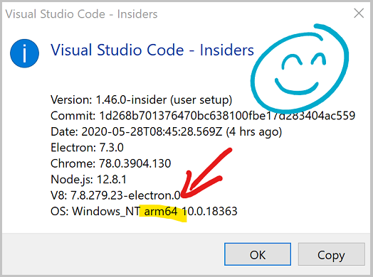
--crash-reporter-directory argument for diagnosing issues
A new command-line argument --crash-reporter-directory allows you to pass a local folder where you'd like to save crash reports. This even works for crashes in the extension host and can be used whenever VS Code is crashing and you want to report an issue.
Preload Scripts
We have added Electron preload scripts to VS Code for exposing certain Electron APIs to the window. This is one of the first steps towards a fully sandboxed window. Progress is outlined in issue #92164.
Extension samples now use ESLint
Our extension samples have all been updated to use ESLint for linting instead of the now deprecated TSLint. If your extension is still using TSLint, you can review the TSLint to ESLint Migration guide and our newly updated extension samples to see how to migrate to ESLint.
GitHub Triage Extension
We created an extension for chromium-based browsers to help us with issue triaging on GitHub by providing a single fuzzy-filterable menu of assignees, labels, milestones, and various special comments we use to trigger our triaging GitHub Actions. We have open sourced the code on GitHub.
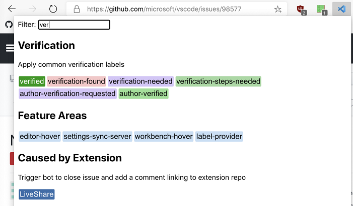
Documentation and extensions
Visual Studio Code at Build
The VS Code team presented at the Microsoft Build 2020 conference and you can find an overview of the VS Code sessions and online talks in this VS Code at Build blog post.
Several talks by VS Code team members:
- VS Code Tips and Tricks - 20 tips and tricks to make you more productive with VS Code.
- What every Visual Studio Code user should know about GitHub - Learn about VS Code's GitHub integration for PRs and issues.
- Remote Development with Visual Studio Code - Learn how Visual Studio Code enables developers to work remotely from anywhere.
- The History of Visual Studio Code - Learn about how VS Code started and evolved until today.
Azure extensions
There are several new extensions for working with and deploying Azure assets directly from within VS Code.
- Azure Static Web Apps - Create and manage Azure Static Web Apps directly from VS Code.
- Azure Databases - Create, browse, and update globally distributed, multi-model databases in Azure.
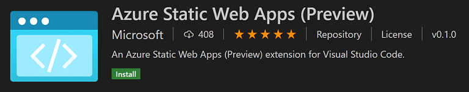
New commands
| Key | Command | Command ID |
|---|---|---|
| ⌘K ⇧Enter (Windows, Linux Ctrl+K Shift+Enter) | Pin Editor | workbench.action.pinEditor |
| ⌘K ⇧Enter (Windows, Linux Ctrl+K Shift+Enter) | Unpin Editor | workbench.action.unpinEditor |
Notable fixes
- 10144: Use system-ui as font on Linux
- 63068: macOS dock icon is minuscule
- 69163: Reveal Active File in Side Bar is throwing an exception
- 95367: DAP "evaluate" request issued for invalid frameId
- 95856: Go To Line should include "filename.extension:line number" format
- 96713: Stopping a session from call stack actions view always goes to the active session
- 96914: Typing is laggy when outline is visible
- 96987: Orca does not read the line number in the breakpoint view
- 97444: Copying a long value from debug watch results in pasting partial value
- 97471: Debug hover is too narrow and horizontal scrolling useless
- 97731: VS code freezes when typing and scrolling
- 96643: Tasks (and TaskExecutions) are not === in the onDid(Start|End)Task callbacks
Thank you
Last but certainly not least, a big Thank You to the following people who contributed this month to VS Code:
Contributions to our issue tracking:
- John Murray (@gjsjohnmurray)
- Andrii Dieiev (@IllusionMH)
- Alexander (@usernamehw)
- Simon Chan (@yume-chan)
- ArturoDent (@ArturoDent)
Contributions to vscode:
- AlexStrNik (@AlexStrNik)
- Andrew Branch (@andrewbranch): Proposal: Allow TS Server to be spawned with --inspect-brk PR #98340
- Christos Pappas (@ChrisPapp)
- @D-to-the-K: Support for Unicode-aware regular expressions in Monaco Monarch language definitions PR #98447
- Rick van Galen (@DCKcode): Containerfile support PR #93184
- Paul (@DFineNormal): Fix spelling in snippets.contribution.ts PR #98396
- matt penrice (@elmpp): Create VsCodeResource for schemed filepaths PR #94986
- HaoboGu (@HaoboGu): fix #98102 PR #98127
- HiDeoo (@HiDeoo): Fix typo in vscode.d.ts PR #98692
- Ilia Pozdnyakov (@iliazeus): add
:line goto pattern #95856 PR #96535 - Andrii Dieiev (@IllusionMH): Fix debug icon. Use Codicons instead of text PR #98716
- Jack Works (@Jack-Works): Update typescript.code-snippets PR #98521
- @Jagua: Fix indentation and typo of json-language server readme PR #97812
- Jānis Gailis (@JanisGailis): Add terminal colors to Monokai Dimmed theme PR #98323
- Jean Pierre (@jeanp413)
- Fixes editor has wrong height when toggling tabs with breadcrumbs visible PR #97502
- Add option to create launch config in workspace file PR #97321
- Fix empty item in explorer after clicking on Collapse Folders action while editing new file/folder PR #96853
- Fixes assigning keybinding to workspace level task does not work PR #97380
- Avoid calling layout during flipNode PR #92004
- Use dropdown.background color in debug dropdown PR #96576
- Use dropdown.background color in debug dropdown container PR #96996
- John Keech (@jkeech): Clear out stale CSS style properties on webview PR #96665
- John Blackbourn (@johnbillion): Treat *.ts.map files as JSON PR #98409
- Robert Jin (@jzyrobert): #84696 Modify git add/revert to use splitInChunks PR #84843
- Danny Lin (@kdrag0n): Restore and fix macOS dark text selection cursor PR #96947
- Leila Pearson (@leilapearson): Fix filename sort order edge cases in explorer. PR #97200
- Lissein (@lissein): Fix comment on titleBar theme colors PR #97360
- Max (@MaxGyver83): Make Neo keyboard layout (layer 4) arrow keys work in explorer view PR #98269
- Alasdair McLeay (@penx): CSS - Search in parent folders for node module resolution PR #81555
- Pieter Vanderpol (@petevdp): Allow the inline diff editor to be centered. PR #97311
- Pascal Fong Kye (@pfongkye): fix: new command stageAllMerge PR #97349
- James Koss (@phuein): Dont scroll to revealed files option. PR #96890
- Jack Platten (@plttn): Fix typo PR #97198
- @ricksentam: changed build PR #98857
- Robert Rossmann (@robertrossmann)
- shskwmt (@shskwmt): Feature #94173: Scroll when inserting suggestion PR #94327
- Steven Hermans (@steven166): Upload folders via D&D in the browser workbench PR #97347
- Rahul Kadyan (@znck): feat: use configNamespace for registering language providers of other extensions PR #95621
- Jakub Trąd (@Dzejkop): Search Editor: Add default show context value proeprty PR #97920
Contributions to language-server-protocol:
- (@KamasamaK)
- Knut Aldrin (@zub): Correct 'aritfacts' spelling PR #980
- Remy Suen (@rcjsuen): Fix typo of "revers" to "reverse" PR #995
- Steven Kalt (@SKalt): Use sticky table headers PR #1000
Contributions to vscode-generator-code:
- Alexey Elizarov (@beautyfree): fix: invalid json of dark theme PR #207
Contributions to vscode-vsce:
- Owen Farrell (@owenfarrell): Support injecting PAT from an environmental variable PR #447
Contributions to debug-adapter-protocol:
- @auott
- Vitalii Akimov (@awto): Effectful JavaScript debugger reference in adapters.md PR #113
- @tomcec: Update adapters.md PR #115
- Andrew Wang (@WardenGnaw): Update C/C++ DAP Maintainer PR #117
- FW (@fwcd): Add Kotlin Debug Adapter PR #120
Contributions to vscode-js-debug:
- Vadym Okun (@cbmd): Added posibility to run with chosen package manager instead of
npmonly. PR #459
Contributions to localization:
We have keenly listened to your feedback over the past year, and decided it was time to provide a more reliable and interactive platform, where you can contribute to VS Code localization development. With this in mind, we officially decommissioned the Microsoft Localization Community Platform (MLCP) in the first week of April, with the intent of continuing the Microsoft Community Localization Program on an alternative platform for open-source localization projects.
Stay tuned in the upcoming weeks for an announcement on our Wiki page about the new community platform. You can also visit the FAQ page for answers about this platform transition.